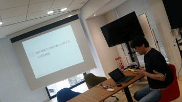
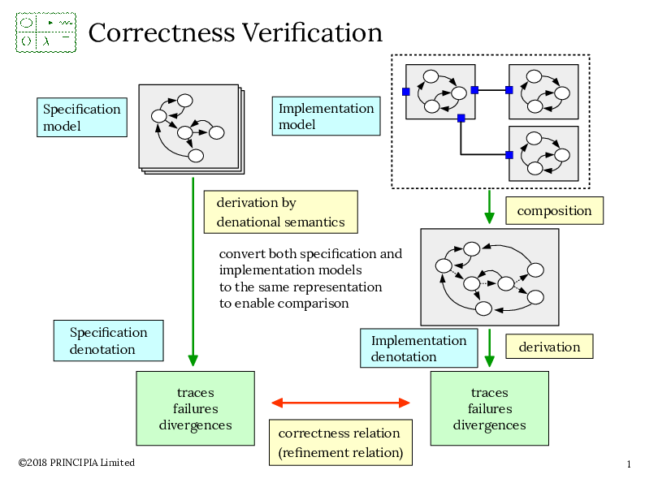
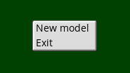
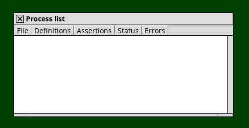
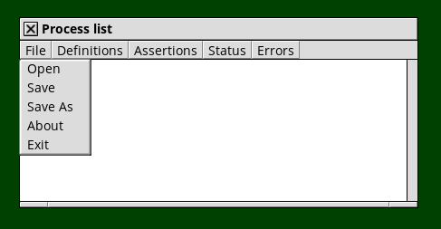
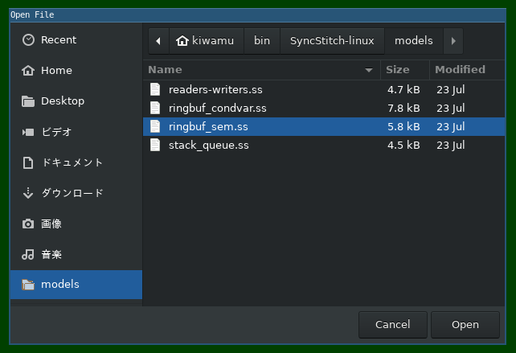
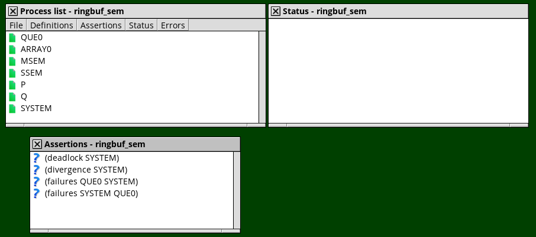
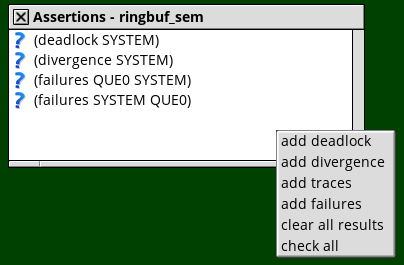
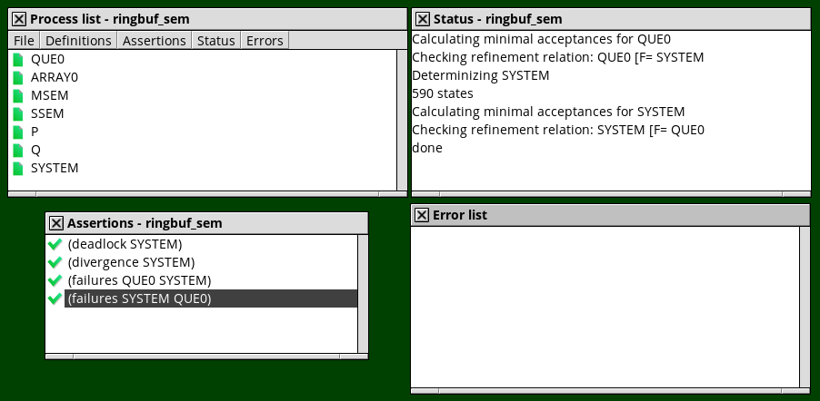

If you are using Windows or Linux, you must buy SyncStitch with only 64,800 JPY!
We had “SyncStitch hands-on” on 静的コード解析の会 at Tokyo. This hands-on purpose is to introduce CSP (Communicating Sequential Processes) and use SyncStitch to get modeling on concurrent systems.
On CSP, developer can write Specification model and split it into some Implementation models connected by channel.

After getting models, developer can get correctness relation using SyncStitch.
$ sudo apt install unar gcc fonts-open-sans fonts-inconsolata
$ mkdir $HOME/bin
$ cd $HOME/bin
$ unar SyncStitch-linux.zip
$ cd SyncStitch-linux/bin
$ chmod +x ssg ssgsvr syncstitch
$ export PATH=$(pwd):$PATH$HOME/.syncstitch:$ vi $HOME/.syncstitch
(
; (dpi . 96)
(system-font-face . "Open Sans")
(system-font-size . 11)
(small-font-size . 9)
(code-font-face . "Inconsolata")
(code-font-size . 12)
(handle-size . 3)
(syncstitch
(license-key . "___YOUR OWN LICENSE KEY___")
(node . "127.0.0.1")
; (node . "::1")
(service . "50000"))
)ssgsvr$ (cd $HOME/bin/SyncStitch-linux/bin && ./ssgsvr)
num_workers: 1
heap_size (GiB): 1
hashtable size: 4000037
port no: 50000syncstitch on the other terminal$ syncstitch


SyncStitch-linux/models/stack_queue.ss file


SYSTEM is soundness in CSP!
Please read SyncStitch-linux/doc/SyncStitch_Users_Guide.pdf. You can feel free to tweet with hastsugai, or e-mail isaac@principia-m.com.
Copyright (C) 2018 PRINCIPIA Limited.
blog comments powered by